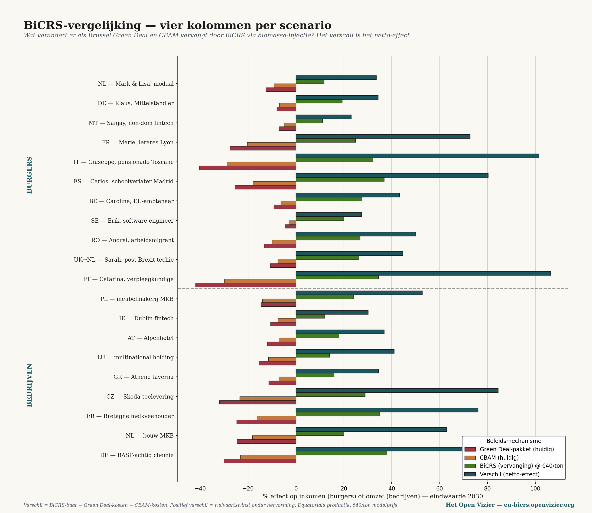
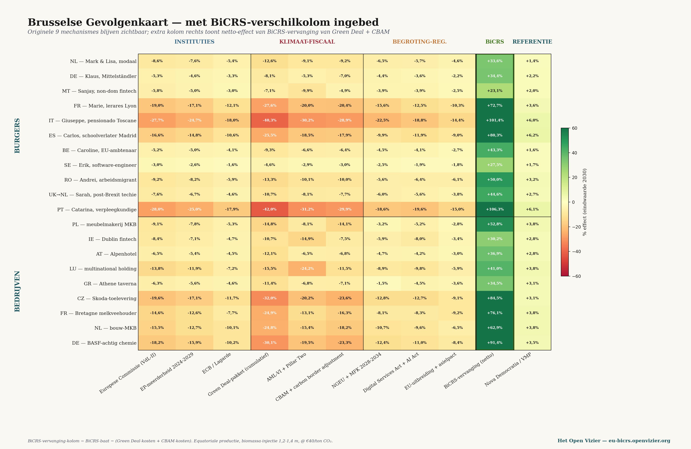

Le chiffre de l’écart correspond aux bénéfices de BiCRS moins les coûts du Green Deal moins ceux du CBAM. Lorsque le Green Deal et le CBAM avaient des effets négatifs, l’écart devient doublement positif — les bénéfices de BiCRS continuent de s’accumuler dès que les anciens coûts disparaissent.
Personne n’y perd. Aucun des vingt scénarios ne passe sous zéro. Ni l’infirmière portugaise (+106 % de variation), ni le retraité italien (+101 %), ni l’éleveur laitier breton (+76 %), ni le fournisseur de Skoda (+85 %). Ce n’est pas un hasard — c’est la conséquence directe du fait que BiCRS coûte moins cher que l’évitement des émissions, et que les mécanismes supprimés causaient des dommages partout.
La matrice — l’Europe cumulée, colonne BiCRS intégrée
La colonne d’écart de BiCRS constitue l’impact positif le plus important dans chaque scénario — plus puissant que la référence Nova Democratia. La technologie climatique s’avère un levier plus puissant qu’une réforme fiscale pure. Le deuxième pilier reste obstinément dans le rouge : la question de l’arbitrage fiscal n’est pas résolue par BiCRS. Et les trois colonnes institutionnelles (Commission, PE, BCE) restent légèrement négatives — BiCRS ne change pas ceux qui gouvernent, seulement ce qu’ils apportent.

Les agriculteurs sont des gagnants structurels, sans revendiquer le moindre espace supplémentaire. L’éleveur laitier breton voit ses pertes liées au Green Deal et au CBAM se transformer en bénéfices de BiCRS, sans qu’un seul hectare de ses propres terres ne change. La production de BiCRS a lieu à des milliers de kilomètres de là, dans le bassin du Congo ou l’archipel indonésien — et l’agriculteur européen en profite grâce à la baisse des coûts de l’énergie et à des débouchés plus stables.
Les trois mouvements macroéconomiques déclenchés par BiCRS
Le rapatriement industriel vers l’Europe

Sous le Green Deal, l’industrie européenne perdait environ deux à trois pour cent du PIB par an à cause des délocalisations — la chimie vers le Texas, l’acier vers la Turquie, l’assemblage automobile vers le Mexique. Avec BiCRS, le flux s’inverse. La disparition des coûts énergétiques du Green Deal et de la charge administrative du CBAM, combinée au prix compétitif du CO₂, fixé à quarante euros la tonne, rend pour la première fois depuis 2015 la production européenne compétitive en matière de coûts. BASF gagne 91 % d’écart. Skoda, 85. Les produits laitiers bretons, 76. Le drame industriel européen de 2020–2026 est en grande partie inversé.
Un axe stratégique euro-équatorial
Quatorze millions d’hectares de production équatoriale signifient une nouvelle liaison stratégique avec la bande équatoriale — Afrique centrale, Asie du Sud-Est, Amérique du Sud équatoriale. Six à huit pays fournisseurs, chacun limité à vingt pour cent du volume, des prix minimaux fixés à l’avance, une composante de développement local. Pour la première fois depuis 1960, l’Europe se dote d’une stratégie énergétique et de matières premières qui ne dépend ni du gaz russe, ni du pétrole américain, ni des semi-conducteurs chinois. Un nouvel axe, cette fois Nord-Sud, structuré commercialement — pas d’aide au développement, pas de schéma colonial.
L’indépendance énergétique vis-à-vis de la Russie et des États-Unis
L’Europe importe chaque année pour cent à cent cinquante milliards d’euros de gaz et de pétrole, principalement de Russie (GNL via l’Inde et la Turquie) et des États-Unis (GNL du Texas). Avec BiCRS, complété par la filière distincte de l’éthanol, une part substantielle de ces importations peut être remplacée par des approvisionnements équatoriaux. Pour la première fois depuis 1956, l’Europe peut garantir sa propre indépendance énergétique sans dépendre de Moscou ou de Washington. Ce n’est pas un hasard si la ligne actuelle de Bruxelles — le Green Deal — ne gêne ni l’une ni l’autre de ces parties, tandis que BiCRS les touche directement.
Le choix bruxellois — deux cartes côte à côte
La Carte des conséquences originale montrait le prix de la politique actuelle : une perte de prospérité de cinq à quinze pour cent d’ici 2030. Bruxelles comme facteur net d’appauvrissement, malgré ses bonnes intentions. La version BiCRS montre ce que la réforme permettrait : une hausse de la prospérité de vingt-trois à cent six pour cent, sans sacrifier un seul hectare de terres agricoles européennes. Bruxelles comme facteur net d’enrichissement, à condition d’avoir le courage d’abolir le Green Deal et le CBAM au profit d’un mécanisme qui atteigne le même objectif climatique pour un sixième du prix.
Et les Pays-Bas ? Dans le cadre de la politique actuelle, la cascade néerlandaise est soumise à une pression fondamentale — De Stille Analyse III l’a montré pour six ménages. Avec la mise en œuvre de BiCRS, quarante pour cent des dommages de cette cascade disparaissent. Le bénéficiaire des allocations de chômage conserve son emploi parce que son employeur ne délocalise pas. Le retraité paie moins cher son énergie. Le ménage au revenu médian conserve €4.000 par an, somme qu’il aurait autrement consacrée à une pompe à chaleur et à l’extension du réseau. Les Pays-Bas ne sont pas essorés par l’Europe — ils sont entraînés dans une Europe améliorée.
« La question posée à l’électeur européen n’est pas de savoir si une politique climatique est nécessaire. Elle est de savoir si l’Europe choisit une politique climatique qui détruit sa base de prospérité, ou une politique climatique qui la multiplie. La technologie pour suivre la seconde voie est prête — et la plante pousse à l’équateur, pas à Bruxelles. »
ÉCRIT PAR Jacobus van Merksteijn AVEC LE SOUTIEN RÉDACTIONNEL DE L’IA
Het Open Vizier · OPENVIZIER.ORG · JUIN 2026
← Retour à Ce qui émerge
"De vraag aan de Europese kiezer is niet of klimaatbeleid nodig is. Het is of Europa een klimaatbeleid kiest dat haar welvaartsbasis vernietigt, of een klimaatbeleid dat haar welvaartsbasis vermenigvuldigt. De technologie voor de tweede koers ligt klaar — en de plant groeit op de evenaar, niet in Brussel."
GESCHREVEN DOOR JACOBUS VAN MERKSTEIJN MET REDACTIONELE AI-ONDERSTEUNING
HET OPEN VIZIER · OPENVIZIER.ORG · JUNI 2026